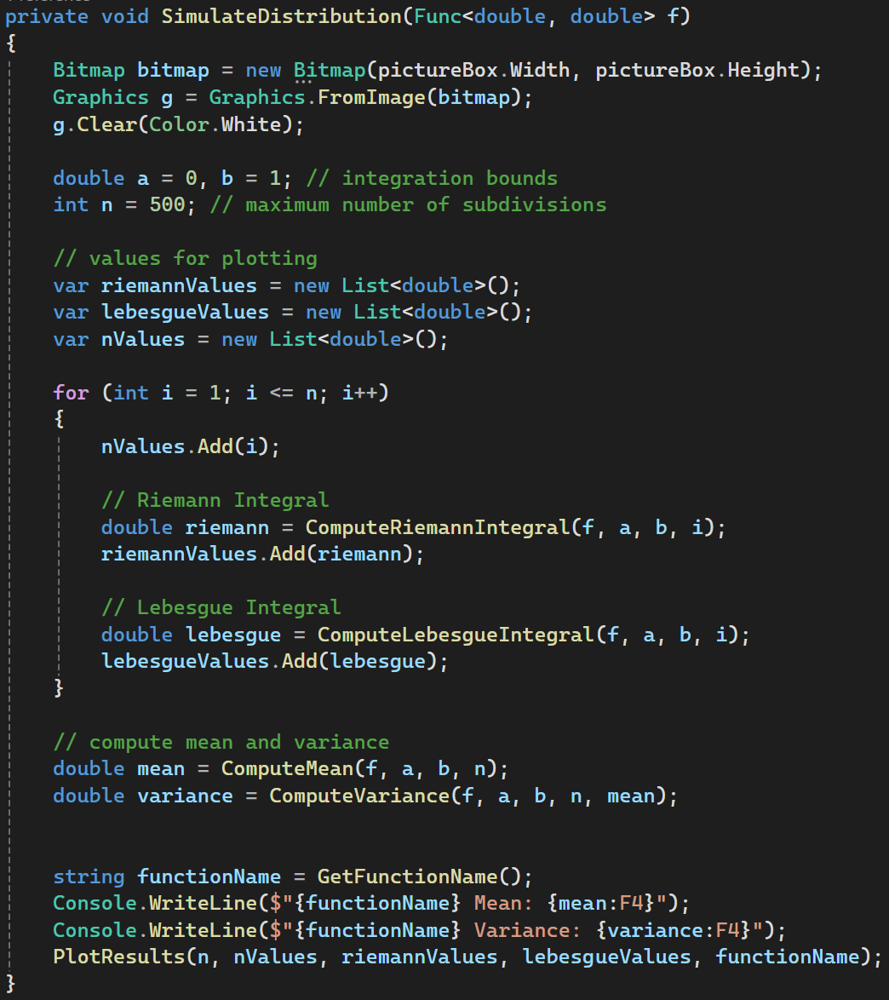
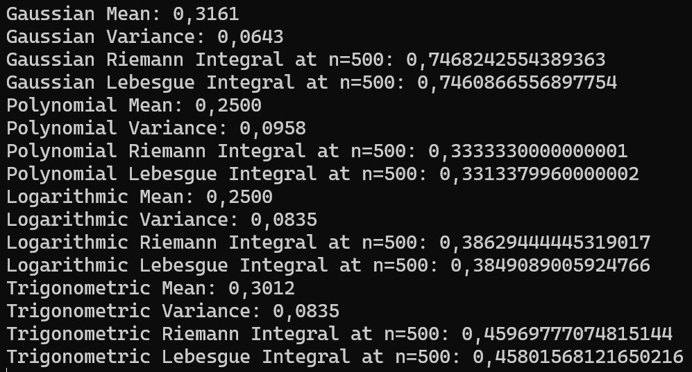
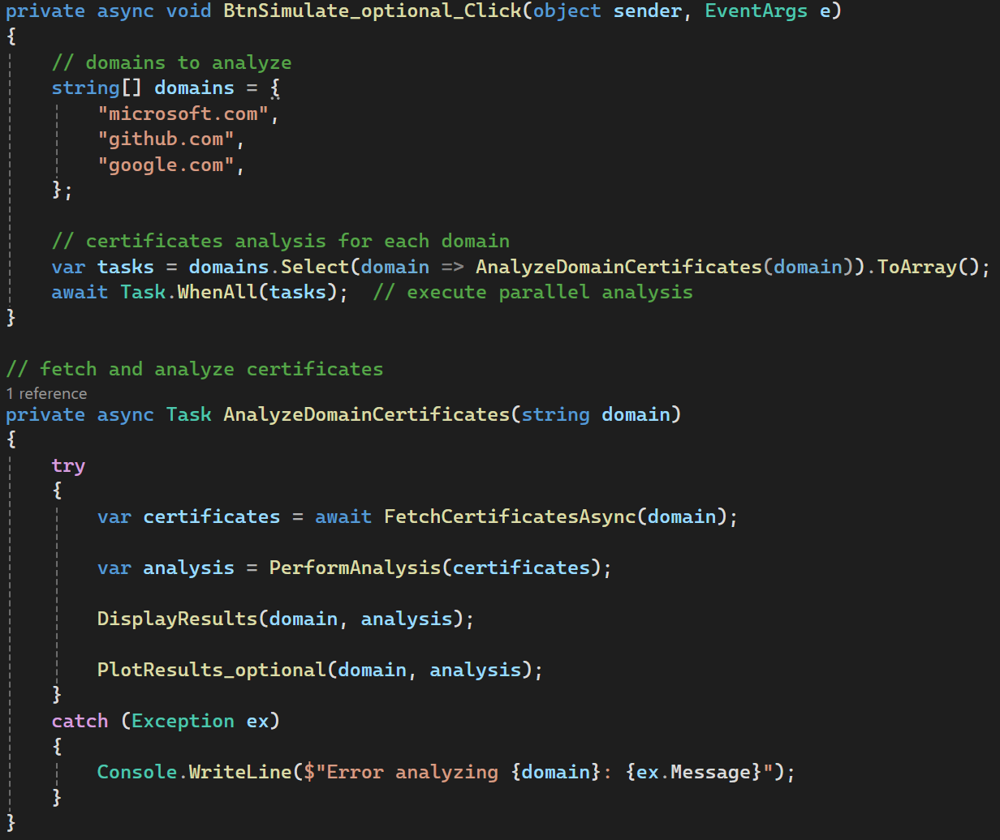
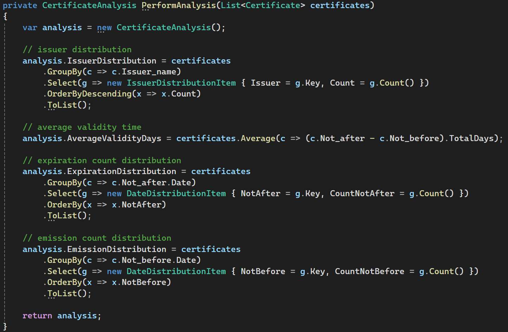
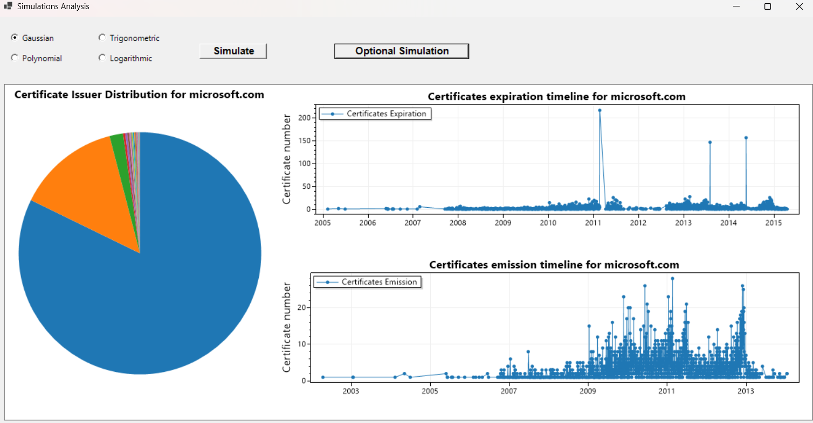
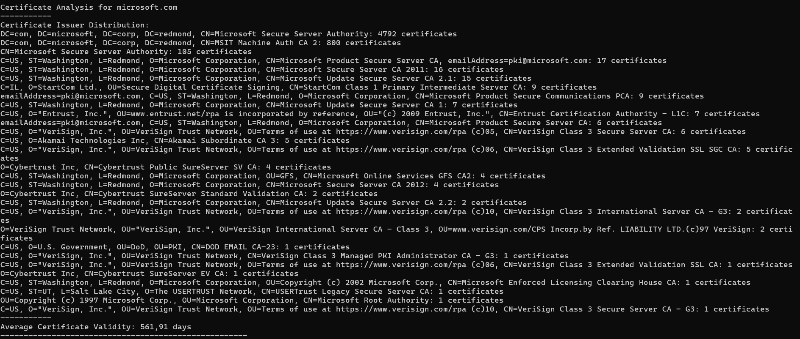
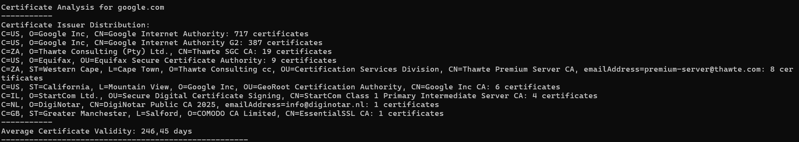
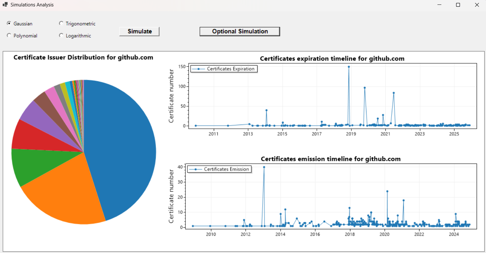
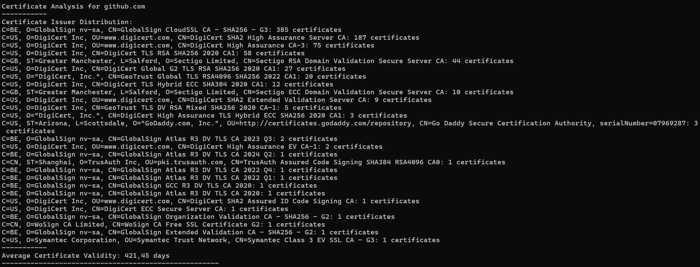

Simulation Exercise
Part 1
In this simulation, we compared Riemann and Lebesgue integrals for 4 different continuous functions and for a maximum number of subdivision equal to 500.
The two integrations offer distinct ways of calculating and interpreting an area under a curve. Computing a Lebesgue integral numerically can be done by summing contributions of function values over measure-based partitions (e.g., intervals grouped by function values), whereas the Riemann integral approximates the area under a curve by partitioning the domain into small intervals. That's what we did in the following code:
Selecting one of the 4 functions using the radio button and clicking "Simulate" button, the
SimulateDistribution function is triggered. Here we define the integration bounds and the
maximum number of subdivisions. The integration bounds chosen is [0,1], as the interval \([0, 1]\) is a
standard choice in mathematical analysis, avoids significant
divergences, and provides a uniform
domain for comparing the four functions.
For each increasing subdivision we compute the Riemann and Lebesgue using the two separate methods, plotting the result in the scatter plot.
Then we compute the mean and variance of the selected function, showing the result in the console.

We can see that as \( n \to \infty \), both methods converge to the same value if the function is
integrable.
Further we can see also that Lebesgue integration may be advantageous when \( f \) has discontinuities or is
complex.
Part 2
The "Optional Simulation" button triggers the BtnSimulate_optional_Click
method, which cause the certificates analysis of 3 domains: microsoft.com, github.com and google.com.

For each domain a request is sent to the URL "https://crt.sh/?q={domain}&output=json". This
website gives us
some informations about the certificates of the specified domain, putting it in a json style file.
Once we have retrieved this informations we perform some statistical analysis on them, using the
PerformAnalysis method.

This method compute the issuer distribution and plots the result in a pie chart. The values are showed in
the console.
Then it computes the average validity time for each domain. It proceeds to calculate the distribution of
expiration and emission time of the certificates for each domain, plotting the results in the timeline
graphs.
microsoft.com

google.com


github.com

The timeline graphs allow us to observe peaks in certificate issues and their expiration dates. For each
date, the number of issued and expired/expiring certificates are shown.
For the timeline graphs that only
show data up to 2014, this is due to the fact that the site places a
limit on the number of results shown and truncates the display of them. To get a result with more recent
dates and
unexpired certificates, we could modify the query by adding ‘&exclude=expired’.
These are just some of the possible analysis we can do with the retrieved informations about the certificates. Other possible analysis could be:
- Key Length Analysis: Visual representation of the distribution of key lengths in certificates.
- Certificate Revocation Rates: Percentage of certificates revoked compared to those issued, useful for assessing security.
- Frequency of Significant Digits in Serial Numbers: Checks for any numerical bias in serial numbers, useful for identifying non-standard implementations.
- Hashing Algorithm Analysis: Which hashing algorithms (e.g., SHA-256, SHA-1) are used most frequently.
- Temporal Distribution of Key Lengths: How key lengths have changed over time, highlighting the adoption of more secure standards.
- Compliance with Standards: The number of certificates using configurations that comply with current standards (e.g., avoiding SHA-1, having keys of at least 2048 bits).
- Wildcard Certificate Distribution: The number of wildcard certificates (*.
) compared to specific certificates. - Issuer Emission Speed: How quickly a given issuer releases new certificates.